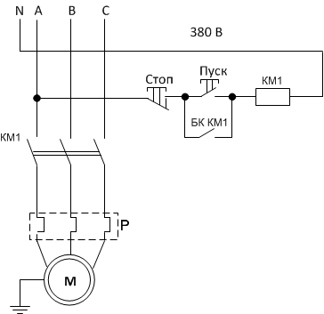
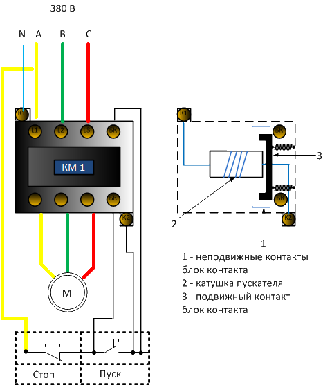
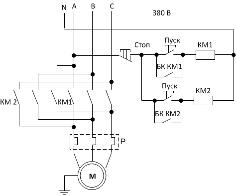
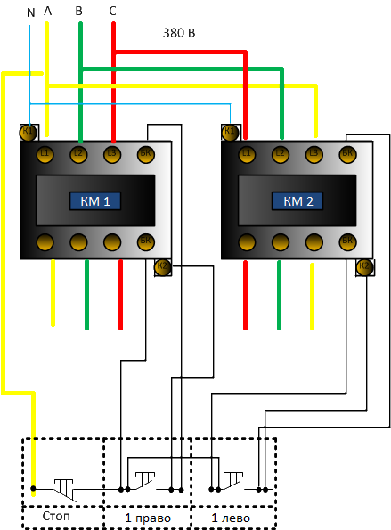
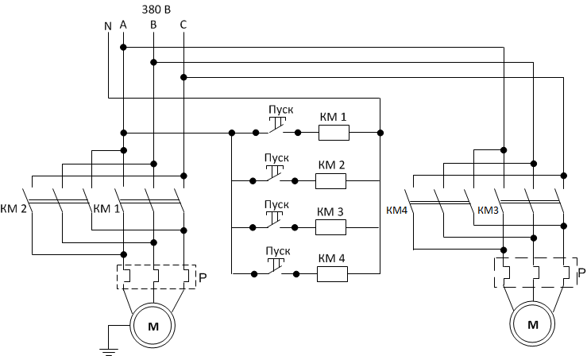
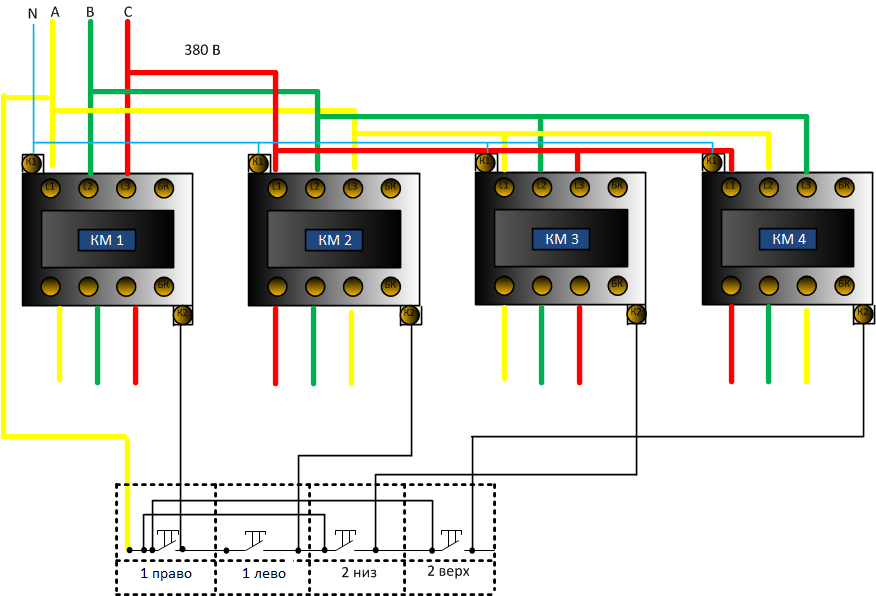

Магнитные пускатели
Магнитные пускатели
Проилюстрируем несколько вариантов подключения оборудования управляемого магнитными пускателями. Предлагается несколько вариантов подключения: для пуска и остановки электродвтгателя (нереверсивное подключение), для переключения направления вращения асинхронного двигателя (реверсивное подключение) и для переключения направления вращения двух асинхронных двигателей что может встречаться в управлении тельфером (верх низ, лево право). Для маскимальной наглядности представлено два варианта схем: функциональная и наглядное изображение.
И так начнем с самого простого подключения (нереверсивного) электродвигателя
Вариант для катушки пускателя на 220 В, если катушка будет на 380 В то вместо нулевого провода N будет испозована любая другая фаза B или С. Краткое описание: при нажатии кнопки "пуск" катушка притягивает траверсу с силовыми контактами, так как кнопка "пуск", удерживаемая пружиной в отключенном состоянии, при прекращении нажатия сразу же размыкается, то блок контакт БК удерживаемый той же траверсой не позволит разомкнуться цепи. Над схемой указано напряжени 380 Вв даном случае имеется ввиду напряжение которое необходимо электродвигателю.

Более наглядный вариант изображения подключения в более "натуральном" виде, тем не менее такой рисунок представляет более приближенную к жизни картину. Мы видим как кнопка "пуск" шунтируется блок контактом, а на рисунке справа наблюдаем все это схематично в разрезе, где траверса 3 замыкает цепь в обход кнопки "пуск.
Реврсивное подключение (вращение двигателя в обе стороны).
Более сложный вариант схемы. Второй пускатель добавляется в схему управления после кнопки "стоп", которая останавливает оба пускателя. Силовые питающие провода А,В,С меняются местами и запитыают вторую цепь К2 на тот же самый асинхронный двигатель, тем самым меняя направление магнитного поля и следовательно направление вращения.
Здесь предоставляется возможность рассмотреть как именно происходит подключение кнопок. Можно наблюдать перемычки в пульте управления, провод после кнопи "стоп" до кнопки "пуск" второго пукателя.
И наконец подключение четырех пускателей к двум двигателям, с возможностью изменять направление вращения на каждом
Наиболее сложный вариант два двигателя четыре пускателя. Каждый двигатель подключен по реверсивной схеме двумя пускателями. Как видно? мы исключили из данной схемы блок контакты, так как в управлении (например) тельфером предусматривается: остановка при прекращении удерживания кнопки "пуск" по этой же причине нет необходимости подключать кнопку "стоп".
И снова наглядное изображение подключения кнопок пульта управления с перемычками необходимыми для работы двух пускателей по направлениям низ и верх.